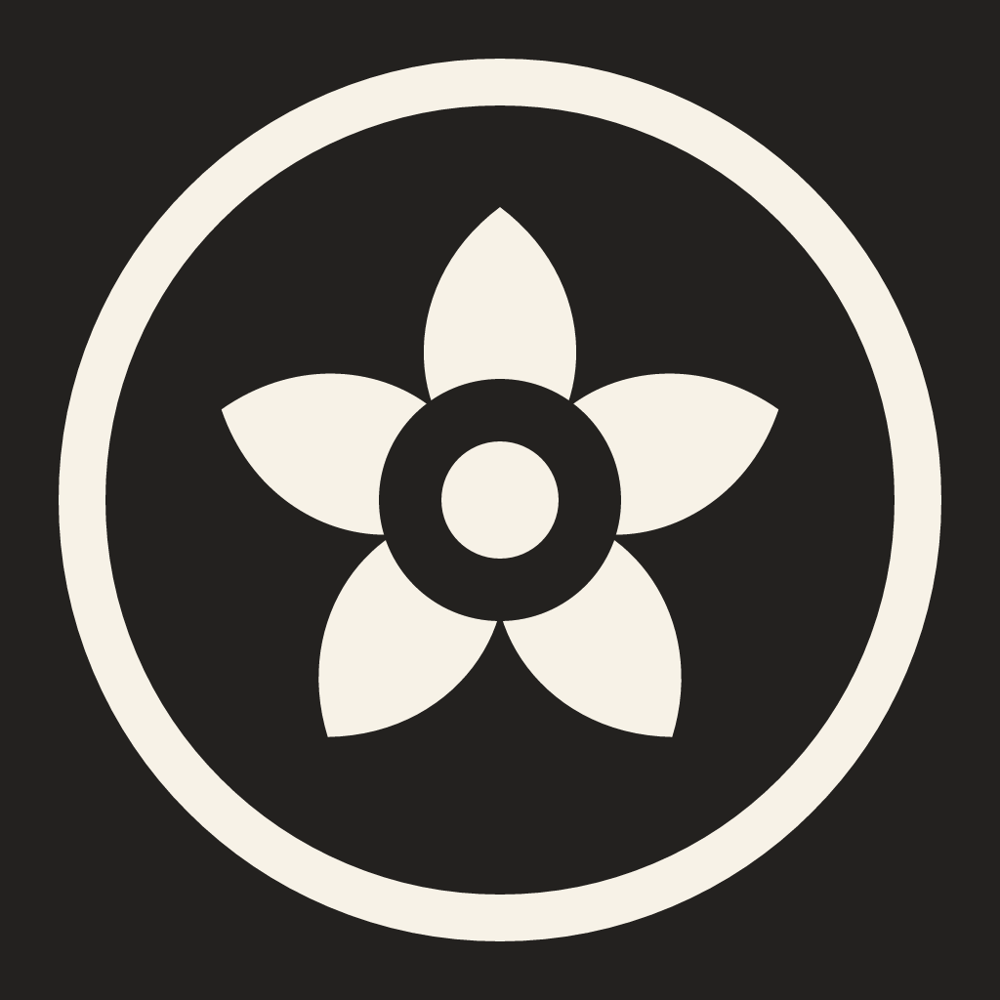
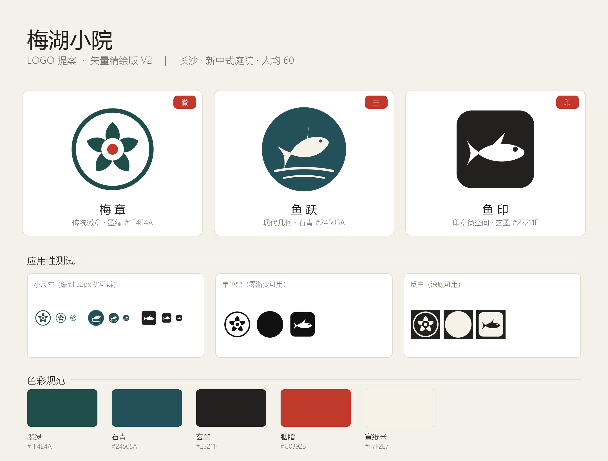

品牌视觉识别系统 · VI Proposal
标识系统 · 色彩规范 · 应用延展
Logo System · 01
Logo Detail · 02
以五点放射构成梅瓣，取「五福临门」的吉祥意象。
外圈取江南园林月洞门的圆形轮廓，框住院中天地。
中心朱红取自印章之色，是整套视觉的唯一高饱和锚点。
Application · 03


Color System · 04
#1F4E4A
品牌基调，承载 60% 视觉权重
#C0392B
印章之色，10% 强调用量
#F7F5F0
留白基调，30% 呼吸空间